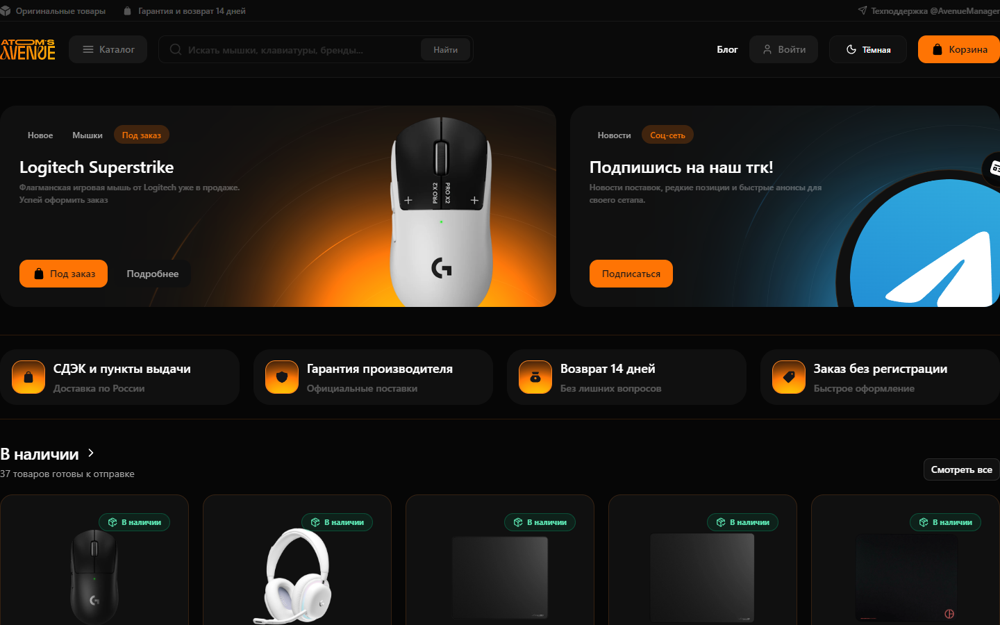
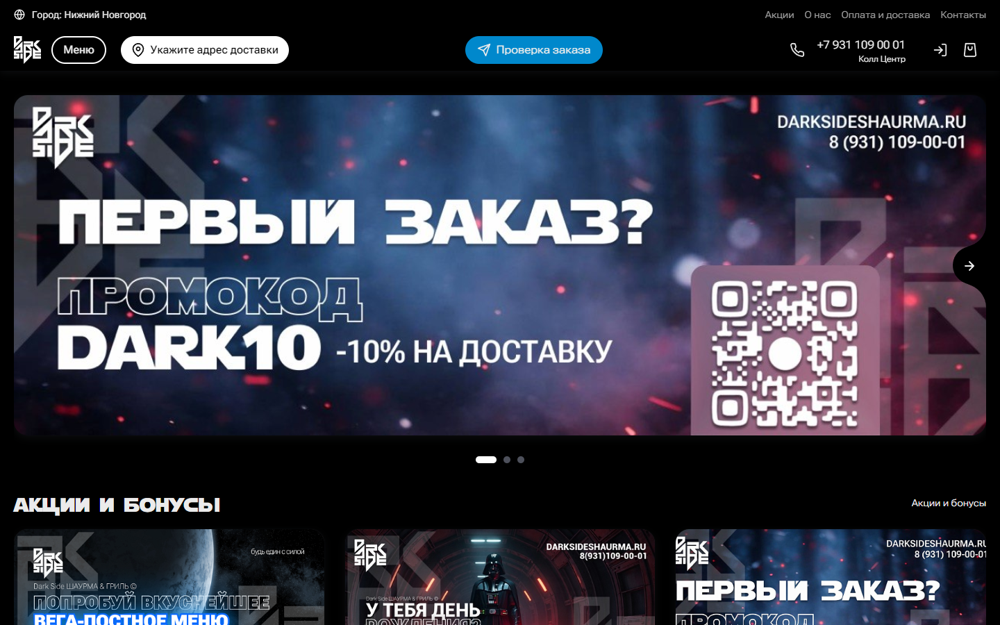
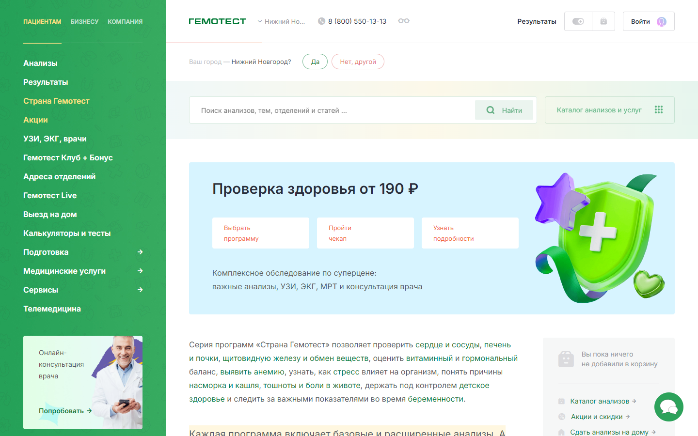

Сайт под вашу задачу
От выразительной витрины до сервиса с несколькими пользовательскими сценариями. Ниже — примеры сайтов других компаний, которые показывают возможный масштаб проекта. Это не мои выполненные работы и не готовые шаблоны.

Atom’s Avenue
Витрина магазина с яркой подачей товаров, каталогом, поиском и корзиной. Подойдёт как ориентир, если нужно быстро показать ассортимент и направить к покупке.
Открыть оригинал ↗
Dark Side
Сайт доставки с меню, акциями, выбором адреса и отслеживанием заказа. Ориентир для проекта, где посетитель должен пройти путь от выбора до оформления.
Открыть оригинал ↗
Гемотест
Пример большого сервиса: направления, программы обследования, поиск, личный кабинет и корзина. Такой масштаб требует продуманной структуры и понятной навигации.
Открыть оригинал ↗У вас может быть другой бизнес, визуальный стиль и набор функций. Опишите задачу — предложу структуру сайта, которая будет работать именно для неё.
Обсудить ваш проект ↗